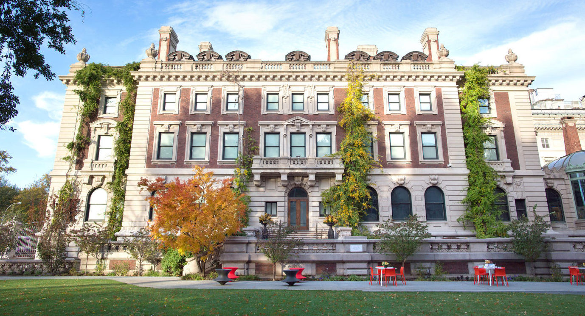
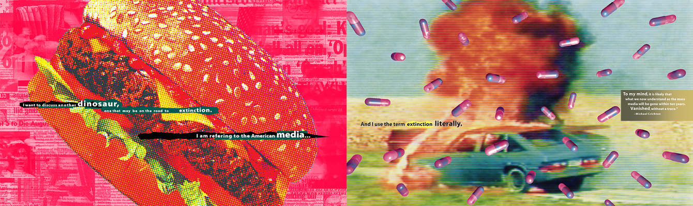
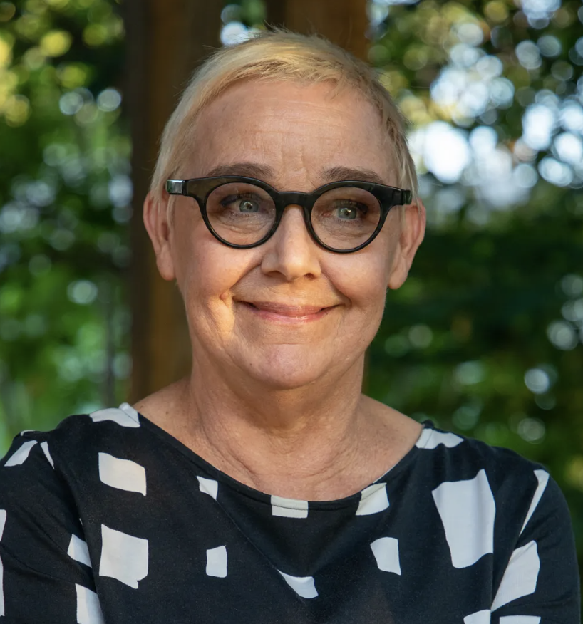
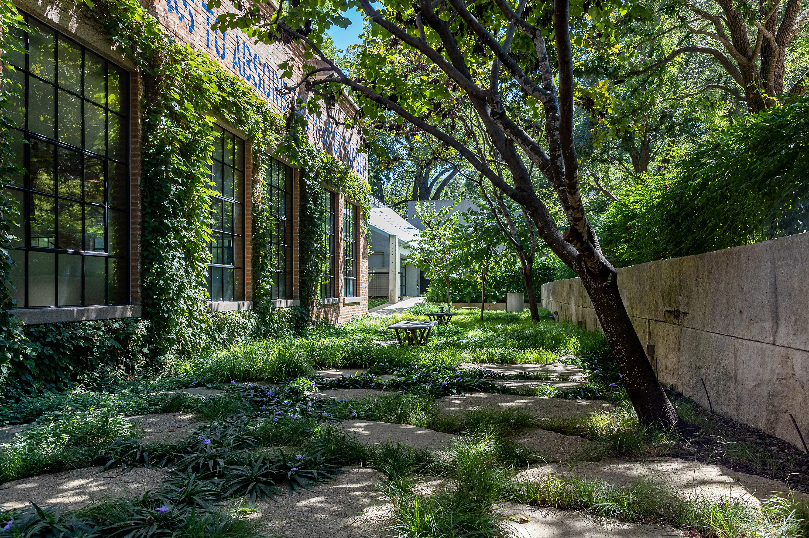
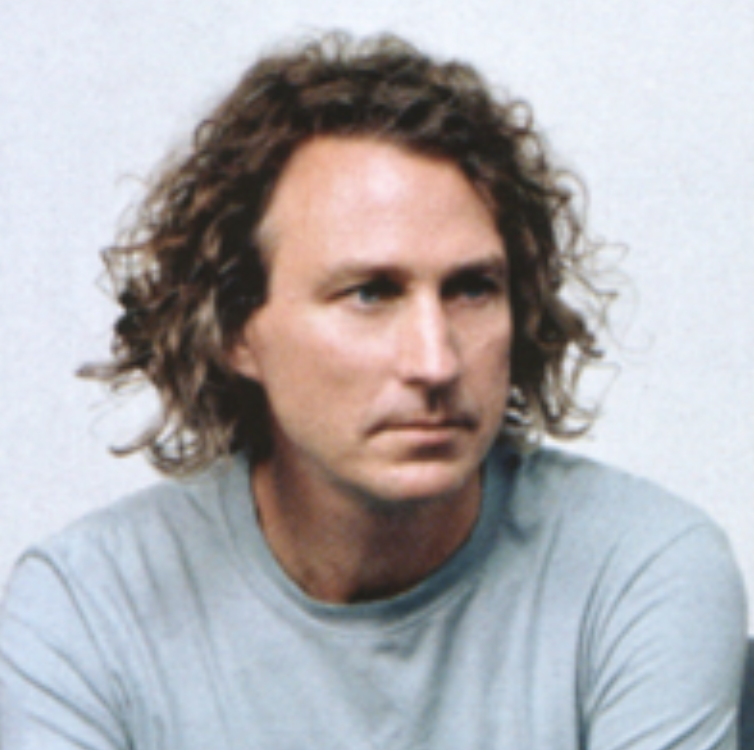
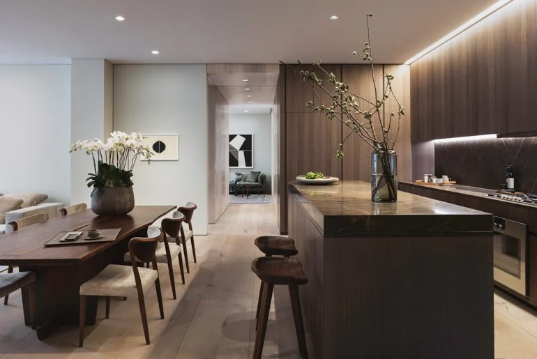
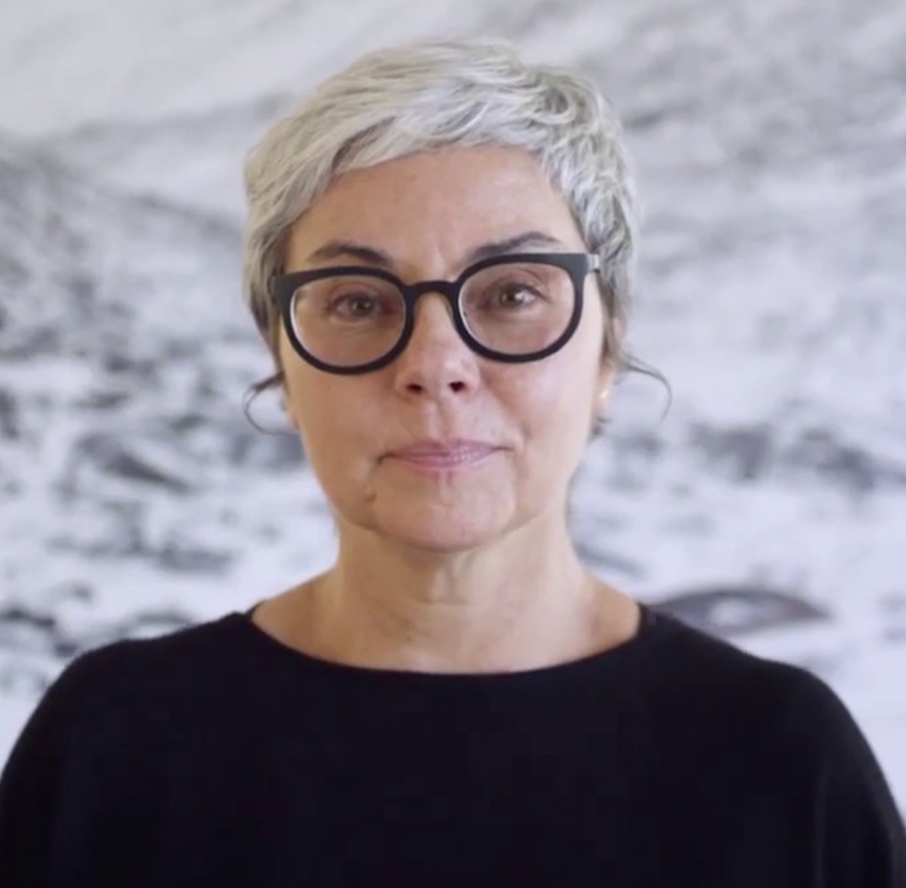
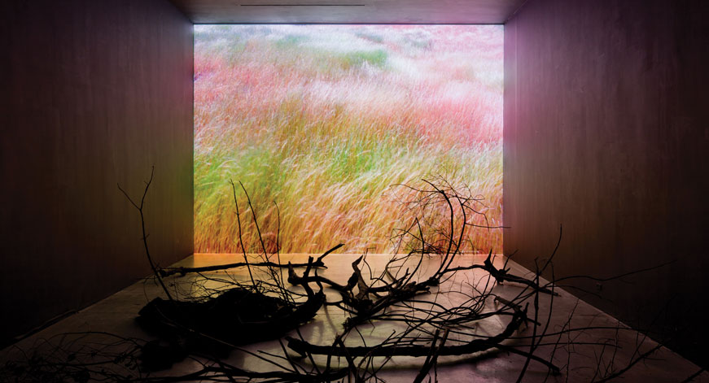
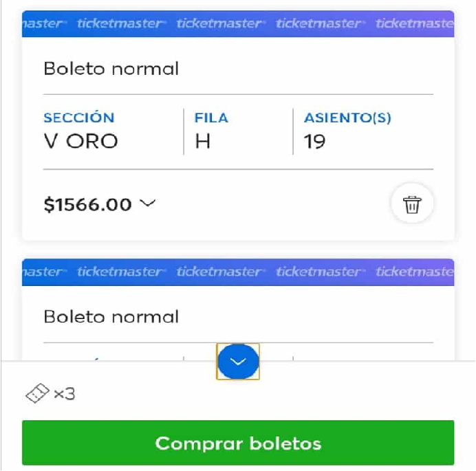

El diseñador gráfico Erik Adigard fundó McShane Adigard Design (M.A.D.) en 1989. Desde entonces, la firma ha diseñado sitios web, instalaciones multimedia y publicaciones impresas para clientes globales, incluida la revista Wired.


Julie Bargmann fundó D.I.R.T Studio, una consultora de paisajismo, en 1992. Entre sus proyectos recientes se incluyen el diseño del paisaje del Museo de Arte Contemporáneo de Massachusetts en North Adams, así como Riverside Park South y Hudson River Park en la ciudad de Nueva York.


Michael Gabellini, graduado de la Escuela de Diseño de Rhode Island, trabajó para Kohn Pedersen Fox Associates antes de fundar su propio estudio en 1991. Sus proyectos recientes incluyen exposiciones para el Museo Guggenheim, la Galería Marian Goodman y el Consejo de Diseñadores de Moda de América.


Rebeca Méndez, nacida y criada en la Ciudad de México y formada en el Art Center College of Design en Pasadena, ha diseñado publicaciones para el Getty Center, el Museo de Arte del Condado de Los Ángeles y el Museo Whitney de Arte Estadounidense.

